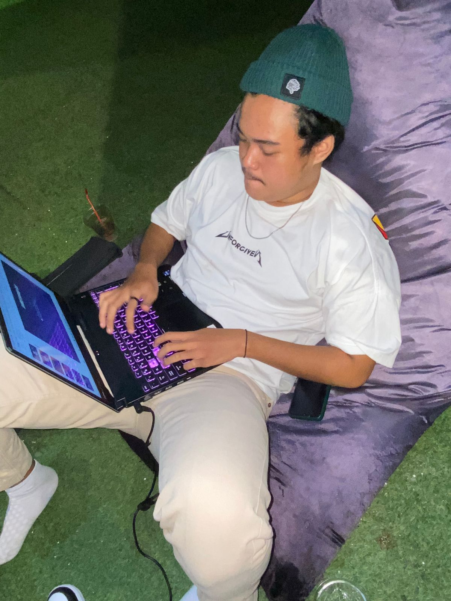

Rafi adalah anak bungsu yang sedang berusaha membanggakan kedua orang
tuanya, kadang kita memang harus memaksakan diri sendiri untuk keluar
dari zona nyaman untuk bisa berkembang. karena pada dasarnya laki-laki
itu harus bisa memberi agar bisa dicintai. Bagaimanapun caranya Rafi
harus jadi orang sukses.